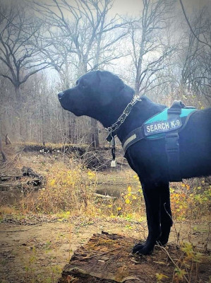

SuperDogs Service & Scent Work Training
Some superheroes have four paws
Ganon Breeding Information
AKC name: VBL's Prince of Enchanted Thieves
AKC registration number: SR97231505
Call name: Ganon
Breed: Labrador Retriever
Birthdate: 14 January 2017
Color: Black
Color genotype: EeBbDD - can produce black, yellow, and chocolate pups, no dilute
Goal
SuperDogs' goal in breeding is to improve the breed. Health of the dogs is always my #1 concern. All my dogs are fed well, exercised, and mentally stimulated on a daily basis.
Genetic Testing (Embark)

View Ganon's Embark DNA test results
Ganon is not an increased risk for any genetic health conditions that Embark tests for, including:
- Alexander Disease (GFAP)
- Canine Elliptocytosis (SPTB Exon 30)
- Centronuclear Myopathy (PTPLA)
- Congenital Macrothrombocytopenia (TUBB1 Exon 1, Cavalier King Charles Spaniel Variant)
- Congenital Myasthenic Syndrome (COLQ)
- Day Blindness (CNGA3 Exon 7 Labrador Retriever Variant)
- Exercise-Induced Collapse (DNM1)
- Golden Retriever Progressive Retinal Atrophy 2, GR-PRA2 (TTC8)
- Hereditary Nasal Parakeratosis (SUV39H2)
- Macular Corneal Dystrophy, MCD (CHST6)
- Narcolepsy (HCRTR2 Intron 6)
- Oculoskeletal Dysplasia 1 (COL9A3, Labrador Retriever)
- Progressive Retinal Atrophy - crd4/cord1 (RPGRIP1)
- Progressive Retinal Atrophy, prcd (PRCD Exon 1)
- Pyruvate Kinase Deficiency (PKLR Exon 7 Labrador Variant)
- Skeletal Dysplasia 2, SD2 (COL11A2)
- Urate Kidney & Bladder Stones (SLC2A9)
- X-Linked Myotubular Myopathy (MTM1, Labrador Variant)
OFA Testing
Hips: Good
Elbows: Normal
Patellas: Normal
Heart echo was done and showed normal, but results never made it to OFA so I'll have this test done again
Pedigree
View Ganon's 5-generation pedigree
Female must have no common ancestors going back at least 4 generations, 5 or more is preferable.
Ganon comes from a line of well-trained and well-tested labradors. His sire held both UKC SHR and AKC CGC titles. His dam did not compete, but three of her four grandparents were titled, including AKC Master Hunter, UKC Hunting Retriever Champion, and UKC Upland Hunter. His granddam trained as a Search and Rescue dog specializing in non-discriminating air scent work, so scent work is in his blood. His grandsire holds titles in United Rally Obedience, and both CGC-A (advanced) & CGC-U (urban). His pedigree includes both Field and Bench style Labrador Retrievers; Ganon has the drive of the Field type with the laid-back attitude of the Bench type. He has a solid "off switch", but knows when it is time to go to work and does so with gusto!
Vet Info
Most recent checkup May 2020 at Coble Animal Hospital in Springfield, IL. Passed every health exam with flying colors. Cleared by veterinarian to both breed and work.
Vaccinations: Rabies, parvovirus, bordetella, leptospirosis, canine influenza, and distemper vaccines up to date as of May 2020. Brucellosis test will be performed prior to first breeding. A negative Brucellosis test result (date within the previous 30 days) is required for all females.
Titles
RATO (barn hunt open)
NACSW Nosework ORT (odor recognition test) passed, waiting for a slot in a level 1 trial
Other Work
Trained as a service dog in case Pepper ever can't work or can't be with me for some reason
Training for search and rescue - human remains detection, live find, and disaster search
Completed an ecological research job in Fall 2020 where we conducted wildlife surveys. This requires him to regularly and quickly learn new scents. This contract was searching for birds and bats killed at wind turbines, there is the potential of more work in following years.
We do a number of public events such as college welcome weeks, talks and demonstrations at schools, scout groups, etc. At the most recent event at a school (K-8), he worked scent in a room with several hundred people and maintained his focus. After the event he was literally swarmed by kids wanting to pet him following the demonstration, and he was a perfect gentleman. I couldn't have asked for him to handle it any better. He very happily let everyone pet him and give him treats while I answered questions.
Drive
Ganon loves scent work more than anything; he will scent anything you give him. I have literally taken a friend's chihuahua, shown her to Ganon to sniff, hid her in a kitchen drawer, and he sniffed her out asleep in the towels. Because he knows how to learn new scents and loves the work, he can be trained on a new scent in a very short perios of time.
Physical Traits
Lean, field-type body with blocky, English head.
Deep-chested.
Really long legs.
Athletic. Muscular but not bulky. Can climb a pile of rubble or run up a steep hill as easily as he can walk on solid ground.
Strong stamina. He can work scenting for hours and not slow down until I make him take a break.
Thick, shiny, double coat.
Healthy teeth and gums. Received the best possible health rating at most recent vet visit.
"Otter" tail.
27" at the withers. Weight around 75 lbs.
Brown eyes, two slightly different shades (checked by vet, no medical problems). Droopy bottom eyelids, causing no medical issues (negative for both entropion and ectropion), and he uses them to his psychological advantage.
Large, expressive ears.
Personality Traits
Eager to work, eager to learn, eager to please. Works hard, plays hard, sleeps hard.
Very tolerant, will put up with whatever shennanigans kids and other animals, even young kids and animals, throw at him.
Alert. Protective. Attentive.
Snuggly. Sometimes overly friendly. Like your typical Labrador, Ganon knows no strangers.
Breeding Method & Price
You are welcome to either send the female in heat to me for natural breeding, or I can send semen (frozen or fresh chilled) for artificial insemination through a canine reproductive specialist.
Since he is just starting breeding, I'm only charging $800 for a breeding with him (plus the cost of semen collection if you would prefer artificial insemination). If you are interested in a breeding with Ganon, please contact me at the information below.